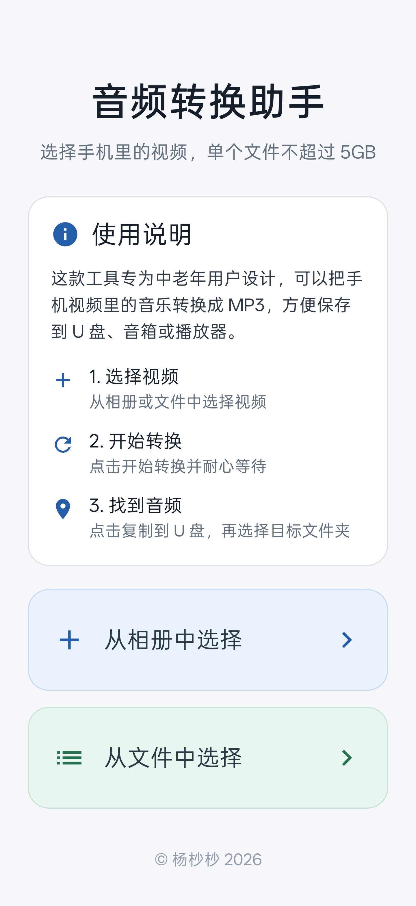
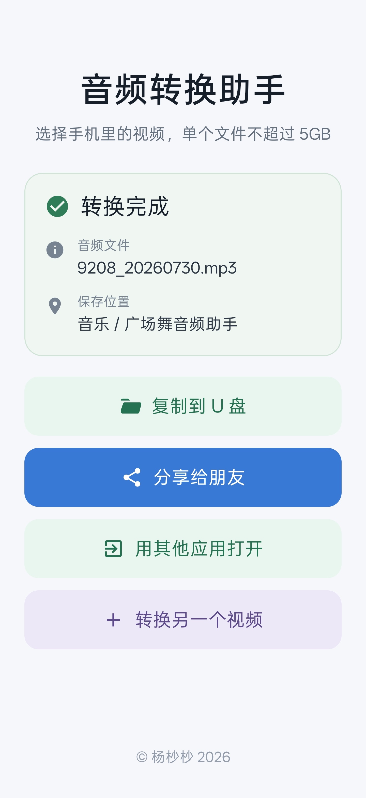

视频转音频
支持常见视频格式一键提取声音并保留原始音质
手机视频一键转换成音频 转换完成直接保存到 U 盘 字大步骤少 家人也能轻松使用


支持常见视频格式一键提取声音并保留原始音质
连接 OTG U 盘后自动识别转换完成即可直接保存
重点操作清晰醒目不用在复杂菜单里反复查找
安装包不到 80MB旧款 Android 手机也能顺畅运行
下载 APK允许手机安装来自浏览器的应用
通过 OTG 转接头连接 U 盘应用会自动识别
选择手机视频并开始转换音频会自动保存到 U 盘
把手机型号和问题描述发给我我会尽快查看
联系我